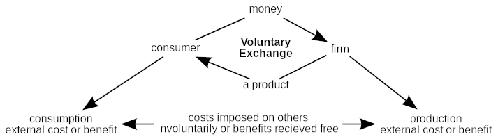
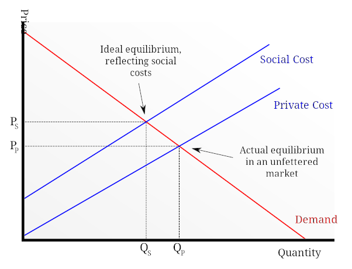
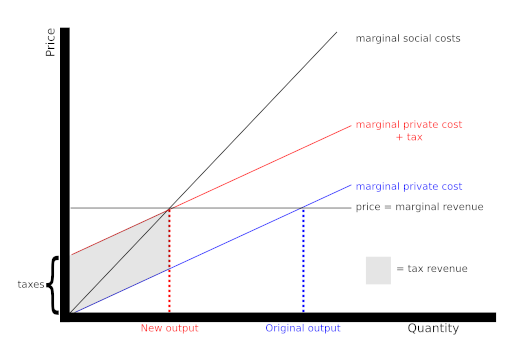
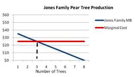
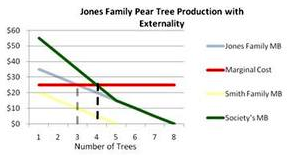

Table of Contents
7. Market Failure: Externalities
7.1. Introducing Market Failure
7.1.1. Defining Market Failure
7.1.2. Causes of Market Failure
7.1.3. Introducing Externalities
7.1.4. Externality Impacts on Efficiency
7.2. Externalities in Depth
7.2.1. Negative Externalities
7.2.2. Positive Externalities
7.3. Government Policy Options
7.3.1. Regulation
7.3.2. Tax
7.3.3. Quotas
7.4. Private Solutions
7.4.1. Types of Private Solutions
7.4.2. The Coase Theorem
7. Market Failure: Externalities
7.1. Introducing Market Failure
7.1.1. Defining Market Failure
Market failure occurs when the price mechanism fails to account for all of the costs and benefits necessary to provide and consume a good.
Learning Objective
Identify common market failures and governmental responses
Key Points
- Prior to market failure, the supply and demand within the market do not produce quantities of the goods where the price reflects the marginal benefit of consumption.
- The structure of market systems contributes to market failure. In the real world, it is not possible for markets to be perfect due to inefficient producers, externalities, environmental concerns, and lack of public goods.
- Government responses to market failure include legislation, direct provision of merit goods and public goods, taxation, subsidies, tradable permits, extension of property rights, advertising, and international cooperation among governments.
Key Terms
- merit good
- A commodity which is judged that an individual or society should have on the basis of some concept of need, rather than ability and willingness to pay.
- public good
- A good that is both non-excludable and non-rivalrous in that individuals cannot be effectively excluded from use and where use by one individual does not reduce availability to others.
- externality
- An impact, positive or negative, on any party not involved in a given economic transaction or act.
Market failure occurs when the price mechanism fails to account for all of the costs and benefits necessary to provide and consume a good. The market will fail by not supplying the socially optimal amount of the good.
Prior to market failure, the supply and demand within the market do not produce quantities of the goods where the price reflects the marginal benefit of consumption. The imbalance causes allocative inefficiency, which is the over- or under-consumption of the good.
The structure of market systems contributes to market failure. In the real world, it is not possible for markets to be perfect due to inefficient producers, externalities, environmental concerns, and lack of public goods. An externality is an effect on a third party which is caused by the production or consumption of a good or service .
Air pollution is an example of a negative externality. Governments may enact tradable permits to try and reduce industrial pollution.
During market failures the government usually responds to varying degrees. Possible government responses include:
- legislation - enacting specific laws. For example, banning smoking in restaurants, or making high school attendance mandatory.
- direct provision of merit and public goods - governments control the supply of goods that have positive externalities. For example, by supplying high amounts of education, parks, or libraries.
- taxation - placing taxes on certain goods to discourage use and internalize external costs. For example, placing a ‘sin-tax' on tobacco products, and subsequently increasing the cost of tobacco consumption.
- subsidies - reducing the price of a good based on the public benefit that is gained. For example, lowering college tuition because society benefits from more educated workers. Subsidies are most appropriate to encourage behavior that has positive externalities.
- tradable permits - permits that allow firms to produce a certain amount of something, commonly pollution. Firms can trade permits with other firms to increase or decrease what they can produce. This is the basis behind cap-and-trade, an attempt to reduce of pollution.
- extension of property rights - creates privatization for certain non-private goods like lakes, rivers, and beaches to create a market for pollution. Then, individuals get fined for polluting certain areas.
- advertising - encourages or discourages consumption.
- international cooperation among governments - governments work together on issues that affect the future of the environment.
7.1.2. Causes of Market Failure
Market failure occurs due to inefficiency in the allocation of goods and services.
Learning Objective
Explain some common causes of market failure
Key Points
- A price mechanism fails to account for all of the costs and benefits involved when providing or consuming a specific good. When this happens, the market will not produce the supply of the good that is socially optimal – it will be over or under produced.
- Due to the structure of markets, it may be impossible for them to be perfect.
- Reasons for market failure include: positive and negative externalities, environmental concerns, lack of public goods, underprovision of merit goods, overprovision of demerit goods, and abuse of monopoly power.
Key Terms
- free rider
- One who obtains benefit from a public good without paying for it directly.
- public good
- A good that is both non-excludable and non-rivalrous in that individuals cannot be effectively excluded from use and where use by one individual does not reduce availability to others.
- monopoly
- A market where one company is the sole supplier.
Market failure occurs due to inefficiency in the allocation of goods and services. A price mechanism fails to account for all of the costs and benefits involved when providing or consuming a specific good. When this happens, the market will not produce the supply of the good that is socially optimal – it will be over or under produced.
In order to fully understand market failure, it is important to recognize the reasons why a market can fail. Due to the structure of markets, it is impossible for them to be perfect. As a result, most markets are not successful and require forms of intervention.
Reasons for market failure include:
- Positive and negative externalities: an externality is an effect on a third party that is caused by the consumption or production of a good or service . A positive externality is a positive spillover that results from the consumption or production of a good or service. For example, although public education may only directly affect students and schools, an educated population may provide positive effects on society as a whole. A negative externality is a negative spillover effect on third parties. For example, secondhand smoke may negatively impact the health of people, even if they do not directly engage in smoking.
- Environmental concerns: effects on the environment as important considerations as well as sustainable development.
- Lack of public goods: public goods are goods where the total cost of production does not increase with the number of consumers. As an example of a public good, a lighthouse has a fixed cost of production that is the same, whether one ship or one hundred ships use its light. Public goods can be underproduced; there is little incentive, from a private standpoint, to provide a lighthouse because one can wait for someone else to provide it, and then use its light without incurring a cost. This problem - someone benefiting from resources or goods and services without paying for the cost of the benefit - is known as the free rider problem.
- Underproduction of merit goods: a merit good is a private good that society believes is under consumed, often with positive externalities. For example, education, healthcare, and sports centers are considered merit goods.
- Overprovision of demerit goods: a demerit good is a private good that society believes is over consumed, often with negative externalities. For example, cigarettes, alcohol, and prostitution are considered demerit goods.
- Abuse of monopoly power: imperfect markets restrict output in an attempt to maximize profit.
When a market fails, the government usually intervenes depending on the reason for the failure.
7.1.3. Introducing Externalities
An externality is a cost or benefit that affects an otherwise uninvolved party who did not choose to be subject to the cost or benefit.
Learning Objective
Give examples of externalities that exist in different parts of socity
Key Points
- In regards to externalities, the cost and benefit to society is the sum of the benefits and costs for all parties involved.
- Market failure occurs when the price mechanism fails to consider all of the costs and benefits necessary for providing and consuming a good.
- In regards to externalities, one way to correct the issue is to internalize the third party costs and benefits. However, in many cases, internalizing the costs is not feasible. When externalities exist, it is possible that the particular industry will experience market failure.
- In many cases, the government intervenes when there is market failure.
Key Terms
- externality
- An impact, positive or negative, on any party not involved in a given economic transaction or act.
- intervene
- To interpose; as, to intervene to settle a quarrel; get involved, so as to alter or hinder an action.
In economics, an externality is a cost or benefit resulting from an activity or transaction, that affects an otherwise uninvolved party who did not choose to be subject to the cost or benefit . An example of an externality is pollution. Health and clean-up costs from pollution impact all of society, not just individuals within the manufacturing industries. In regards to externalities, the cost and benefit to society is the sum of the value of the benefits and costs for all parties involved.

An externality is a cost or benefit that results from an activity or transaction and that affects an otherwise uninvolved party who did not choose to incur that cost or benefit.
Negative vs. Positive
A negative externality is an result of a product that inflicts a negative effect on a third party . In contrast, positive externality is an action of a product that provides a positive effect on a third party.
Air pollution caused by motor vehicles is an example of a negative externality.
Externalities originate within voluntary exchanges. Although the parties directly involved benefit from the exchange, third parties can experience additional effects. For those involuntarily impacted, the effects can be negative (pollution from a factory) or positive (domestic bees kept for honey production, pollinate the neighboring crops).
Economic Strain
Neoclassical welfare economics explains that under plausible conditions, externalities cause economic results that are not ideal for society. The third parties who experience external costs from a negative externality do so without consent, while the individuals who receive external benefits do not pay a cost. The existence of externalities can cause ethical and political problems within society.
In regards to externalities, one way to correct the issue is to internalize the third party costs and benefits. However, in many cases, internalizing the costs is not financially possible. Governments may step in to correct such market failures.
7.1.4. Externality Impacts on Efficiency
Economic efficiency is the use resources to maximize the production of goods; externalities are imperfections that limit efficiency.
Learning Objective
Analyze the effects of externalities on efficiency
Key Points
- An economically efficient society can produce more goods or services than another society without using more resources.
- An externality is a cost or benefit that results from an activity or transaction and affects a third party who did not choose to incur the cost or benefit. Externalities are either positive or negative depending on the nature of the impact on the third party.
- Neoclassical welfare economics states that the existence of externalities results in outcomes that are not ideal for society as a whole.
- In order to maximize economic efficiency, regulations are needed to reduce market failures and imperfections, like internalizing externalities. When market imperfections exist, the efficiency of the market declines.
- In order for economic efficiency to be achieved, one defining rule is that no one can be made better off without making someone else worse off. When externalities are present, not everyone benefits from the production of the good or service.
Key Terms
- efficient
- Making good, thorough, or careful use of resources; not consuming extra. Especially, making good use of time or energy.
- externality
- An impact, positive or negative, on any party not involved in a given economic transaction or act.
Economic Efficiency
In economics, the term "economic efficiency" is defined as the use of resources in order to maximize the production of goods and services. An economically efficient society can produce more goods or services than another society without using more resources.
A market is said to be economically efficient if:
- No one can be made better off without making someone else worse off.
- No additional output can be obtained without increasing the amounts of inputs.
- Production proceeds at the lowest possible cost per unit.
Externalities
An externality is a cost or benefit that results from an activity or transaction and affects a third party who did not choose to incur the cost or benefit . Externalities are either positive or negative depending on the nature of the impact on the third party. An example of a negative externality is pollution. Manufacturing plants emit pollution which impacts individuals living in the surrounding areas. Third parties who are not involved in any aspect of the manufacturing plant are impacted negatively by the pollution. An example of a positive externality would be an individual who lives by a bee farm. The third parties' flowers are pollinated by the neighbor's bees. They have no cost or investment in the business, but they benefit from the bees.
{kind=link}
This diagram shows the voluntary exchange that takes place within a market system. It also shows the economic costs that are associated with externalities.
Externalities and Efficiency
Positive and negative externalities both impact economic efficiency. Neoclassical welfare economics states that the existence of externalities results in outcomes that are not ideal for society as a whole. In the case of negative externalities, third parties experience negative effects from an activity or transaction in which they did not choose to be involved. In order to compensate for negative externalities, the market as a whole is reducing its profits in order to repair the damage that was caused which decreases efficiency. Positive externalities are beneficial to the third party at no cost to them. The collective social welfare is improved, but the providers of the benefit do not make any money from the shared benefit. As a result, less of the good is produced or profited from which is less optimal society and decreases economic efficiency.
In order to deal with externalities, markets usually internalize the costs or benefits. For costs, the market has to spend additional funds in order to make up for damages incurred. Benefits are also internalized because they are viewed as goods produced and used by third parties with no monetary gain for the market. Internalizing costs and benefits is not always feasible, especially when the monetary value or a good or service cannot be determined.
Externalities directly impact efficiency because the production of goods is not efficient when costs are incurred due to damages. Efficiency also decreases when potential money earned is lost on non-paying third parties.
In order to maximize economic efficiency, regulations are needed to reduce market failures and imperfections, like internalizing externalities. When market imperfections exist, the efficiency of the market declines.
7.2. Externalities in Depth
7.2.1. Negative Externalities
Negative externalities are costs caused by an activity that affect an otherwise uninvolved party who did not choose to incur that cost.
Learning Objective
Describe the impact of a negative externality on society
Key Points
- The reason these negative externalities, otherwise known as social costs, occur is that these expenses are generally not included in calculating the costs of production.
- Government intervention is necessary to help "price" negative externalities. They do this through regulations or by instituting market-based policies such as taxes, subsidies, or permit systems.
- Graphically, social costs will be lower than private costs because they do not take into account the additional costs of negative externalities. As a result, firms may produce more units than is optimal from a societal standpoint.
- Graphically, social costs will be lower than private costs because they do not take into account the additional costs of negative externalities. As a result, firms may produce more units than is optimal from a societal standpoint.
Key Term
- externality
- An impact, positive or negative, on any party not involved in a given economic transaction or act.
Example
- Smoking creates negative externalities because the secondhand smoke affects third parties that were otherwise not involved in the transaction.
A negative externality is a cost that results from an activity or transaction and that affects an otherwise uninvolved party who did not choose to incur that cost.
Reasons for Negative Externalities
The reason these negative externalities, otherwise known as social costs, occur is that these expenses are generally not included in calculating the costs of production. Production decisions are generally based on financial data and most social costs are not measured that way. For example, when a firm decides to open up a new factory, it will not account for the cost that residents accrue by drinking water from a river the factory polluted. As a result, a product that shouldn't be produced, because the total expenses exceed the return, are made because social costs were not considered.
In other words, the costs of production represent individual, or private, marginal costs. The private marginal costs are lower than societal marginal costs, which also capture the true costs of the negative externalities. As a result, producers will overestimate the ideal quantity of the good to produce .
{kind=link}
Graphically, negative externalities occur when social costs are lower than private costs, and firms produce more units than is socially optimal. The ideal equilibrium quantity that reflects negative externalities is Qs, but firms may produce at Qp.
Government Solutions for Negative Externalities
In these cases, government intervention is necessary to help "price" negative externalities. Governments can either use regulation (e.g. outlaw an action) or use market solutions. By instituting policies such as pollution penalties, permitting civil lawsuits by private parties to recover damages for negligent actions, and levying environmental taxes, governments can achieve two things. First, these regulations recover funds to help fix the damage caused by negative externalities. Second, these acts help put a financial price on social costs. With that information, businesses can arrive at a more accurate figure for the costs of production. Businesses can then avoid producing products whose financial and social costs exceed the financial return.
Secondhand smoke is an example of a negative externality; a person chooses to smoke, but others who do not choose to smoke are harmed.
7.2.2. Positive Externalities
Positive externalities are benefits caused by activities that affect an otherwise uninvolved party who did not choose to incur that benefit.
Learning Objective
Use an example to discuss the concept of a positive externality
Key Points
- Externalities occur all the time because economic events do not occur within a vacuum. Transactions often require the use of common resources that are shared with parties are not involved with the exchange. The use of these resources in turn impacts the uninvolved parties.
- The problem with positive externalities is that the people who create the externality cannot charge the beneficiaries; the beneficiaries can "free ride," or benefit without paying.
- Free riding results in a suboptimal result, because the producers of the externality will generally create less of the benefit than the larger community needs.
Key Terms
- externality
- An impact, positive or negative, on any party not involved in a given economic transaction or act.
- free rider
- One who obtains benefit from a public good without paying for it directly.
Positive externalities are benefits caused by transactions that affect an otherwise uninvolved party who did not choose to incur that benefit. Externalities occur all the time because economic events do not occur within a vacuum. Transactions often require the use of common resources that are shared with parties are not involved with the exchange. The use of these resources, in turn, impacts the uninvolved parties.
In the case of positive externalities, a transaction has positive side effects for non-related parties. Let's take a look at some example:
- A homeowner keeps his house maintained, the neighborhood benefits through higher home values. The homeowner's neighbors benefit from a positive externality.
- A person may keep bees for her own enjoyment, but gardeners in the area benefit because their flowers are pollinated . The beekeeper's transaction of purchasing bees ends up positively affecting parties who are not involved in the transaction.
- A person becomes inoculated against a disease, those around him benefit because they cannot catch the disease from him. There was an exchange between the doctor and the patient, but others also benefit.
In each of these cases, the people taking action are presumably not doing it for the sake of the community, but for their own purposes. The people taking the action may also enjoy the additional benefits described above, but initiators of actions are not considered beneficiaries of externalities.
The problem with positive externalities is that the people who create these advantages cannot charge the beneficiaries; the beneficiaries can "free ride," or benefit without paying. For example, assume everyone in a community, except one person, got a flu shot. That one person could choose to abstain from receiving the shot; since everyone else got inoculated, he can't get the disease from the others because they can't catch the flu. That person would be a free rider since he would benefit from inoculations without incurring any cost.
Since parties that create the externality aren't compensated, they do not have any incentive to create more. This results in a suboptimal result, because the producers of the externality will generally create less of the benefit than the larger community needs.
7.3. Government Policy Options
7.3.1. Regulation
The government can respond to externalities through command-and-control policies or market-based policies.
Learning Objective
Describe the role of government regulation in addressing externalities
Key Points
- Command-and-control regulation requires or forbids certain behaviors with the goal of addressing an externality.
- Regulation is difficult to implement and enforce correctly.
- Command-and-control regulation can come in the form of government-imposed standards, targets, process requirements, or outright bans.
- The allocation of tradable permits is a market-based policy that has been primarily used to combat pollution.
Key Term
- Negative Externality
- A detremental effect suffered by a party due to a transaction it was not a part of.
The government can respond to externalities in two ways. The government can use command-and-control policies to regulate behavior directly. Alternatively, it can implement market-based policies such as taxes and subsidies to incentivize private decision makers to change their own behavior.
Command-and-control regulation can come in the form of government-imposed standards, targets, process requirements, or outright bans. Such measures make certain behaviors either required or forbidden with the goal of addressing the externality . For example, the government may make it illegal for a company to dump certain chemicals in a river. By doing so, the government hopes to protect the environment or other companies or individuals that use the river that would otherwise suffer a negative impact.
The prohibition of smoking in certain areas is a regulation designed to reduce the negative externalities suffered by non-smokers when they are around smokers.
In practice, implementing regulation effectively is difficult. It requires the regulator to have in-depth knowledge of a certain industry or sphere of economic activity. If done incorrectly, regulation can introduce inefficiency. For example, if the government makes it illegal to dump in the river, the companies and their customers may suffer because the products must be produced using less efficient methods. On the other hand, if the government allows too much to be dumped in the river, they have failed to mitigate the negative externality.
If the government is unsure of how to effectively regulate the market, it should seek other methods of mitigating the externality. Advocates of market-based policies for reducing negative externalities point to the difficulty of creating and enforcing effective regulation for reasons why the government should create systems of incentives and disincentives instead of using the force of regulation.
7.3.2. Tax
Corrective taxes incentivize economic actors to reduce the production of goods or services generating negative externalities.
Learning Objective
Describe the role of taxes in addressing externalities
Key Points
- A corrective tax is a market-based policy option used by the government to address negative externalities.
- Taxes increase the cost of producing goods or services generating the externality, thus encouraging firms to produce less output.
- The tax should be set equal to the value of the negative externality, which is very difficult to do in practice.
- Corrective taxes increase efficiency and provide the government with revenues as well.
Key Term
- Pigovian tax
- A tax applied to a market activity that is generating negative externalities (costs for somebody else).
Taxes are a market-based policy option available to the government to address externalities. A corrective tax (also called a Pigovian tax) is applied to a market activity that is generating negative externalities (costs for a third party). The tax is set equal to the value of the negative externality and provides incentives for allocation of resources closer to the social optimum.
In the case of negative externalities, the social cost of an activity is greater than the private cost of the activity. In such a case, the market outcome is not efficient and may lead to overproduction of the good. Taxes make it more expensive for firms to produce the good or service generating the externality, thus providing an incentive to produce less of it . As the figure demonstrates, a tax shifts the marginal private cost curve up. In response, producers change the output to the socially-optimum level.
{kind=link}
A tax shifts the marginal private cost curve up by the amount of the tax. This gives producers an incentive to reduce output to the socially optimum level.
Take environmental pollution as an example. The private cost of pollution to a polluter is less than its social cost. If the government levies a tax on pollution, it increases the polluter's private cost. The polluter now has an incentive to generate less pollution.
The level of the corrective tax is intended to counterbalance the externality. In practice, however, it is extremely difficult for the government to determine the appropriate level for the tax. Moreover, in determining the tax level, the government might come under pressure from various interest groups that would benefit from a higher or lower taxation level. Nevertheless, by introducing corrective taxes in response to negative externalities the government can not only increase efficiency, but raise revenues as well.
7.3.3. Quotas
Tradable permits are a market-based approach allowing the government to limit negative externalities produced by a group of firms.
Learning Objective
Evaluate a permit system as a method to address externalities
Key Points
- A permit is a right to produce a certain amount of a negative externality, such as pollution.
- Permits are traded among firms. Firms that are able to cheaply reduce production of the externality can sell permits to firms that are unable to make such reductions and are willing to pay for the permits.
- Regardless of the initial allocation of permits, the market for permits achieves an outcome that is more efficient for society.
Key Terms
- Permit
- The right to produce a given amount of a negative externality (for example, the right to emit a specific volume of a pollutant).
- quota
- A restriction on the import of something to a specific quantity.
Example
- To prevent over-fishing, a negative externality, governments may impose individual fishing quotas (IFQs), which set an allowable catch limit for fisheries.
To address the problem of negative externalities, governments may use a quota system to try and limit them. In a quota system, the negative externality is capped at a certain amount. In the example of pollution, the government may put a quota on the amount of pollution a factory can produce by issuing tradable permits.
Tradable permits are one of the market-based approaches the government can use to address externalities. In the past tradable permits have been primarily used to control pollution .
Emissions trading or "cap and trade" is a market-based approach used to control pollution by providing economic incentives for reducing the emissions of pollutants.
When pursuing this approach the government sets a limit or cap on the amount of a pollutant that may be emitted. It then allocates emissions permits up to the specified limit among firms. The permits represent the right to emit or discharge a specific volume of a specified pollutant. Firms are required to hold a number of permits equivalent to their emissions. Firms that need to increase their volume of emissions must buy permits from firms that require fewer of them. This transfer is referred to as a trade. In effect, the buyer is paying a charge for polluting, while the seller is being rewarded for having reduced emissions. The outcome achieved by the market for permits is more efficient, regardless of the initial allocation of permits.
The market for tradable permits creates incentives for firms to produce less pollution. Firms that have a high cost of reducing emissions are willing to pay for the permits, while those that can reduce emissions in the most cost-efficient manner will do so and sell their permits. Tradable permits thus achieve a desired level of the externality by allowing the market to determine which market actors can create the externality.
There are several active trading programs for air pollutants. For greenhouse gases the largest is the European Union Emission Trading Scheme. In the United States there is a national market for sulfur dioxide emissions to reduce acid rain. Markets for other pollutants tend to be smaller and more localized.
7.4. Private Solutions
7.4.1. Types of Private Solutions
Private actors will sometimes effectively address externalities and reach efficient outcomes without government intervention.
Learning Objective
Evaluate how effective private solutions may be in solving market failures produced by externalities
Key Points
- Private solutions to externalities include moral codes, charities, and business mergers or contracts in the self interest of relevant parties.
- The Coase theorem states that when transaction cost are low, two parties will be able to bargain and reach an efficient outcome in the presence of an externality.
- In practice, private parties often fail to resolve the problem of externalities on their own.
Key Terms
- Transaction cost
- The cost incurred in making an economic exchange, such as the costs required to come to an acceptable agreement with the other party to the transaction, drawing up an appropriate contract and so on.
- Coase Theorem
- The theorem states that private economic actors can solve the problem of externalities among themselves.
Government intervention is not always necessary to address externalities. Private actors will sometimes arrive at their own solutions.
There are several types of private solutions to market failures:
- Moral codes: Moral codes guide individuals' behavior. Individuals know that certain actions are simply not "the right thing to do" or would elicit disapproving reactions from others. This is illustrated in the case of littering. The likelihood of being fined may be small, but moral codes provide an incentive to refrain from littering.
- Charities: Charities channel donations from private individuals towards fighting to limit behaviors that result in negative externalities or promoting behaviors that generate positive externalities. The former can be seen in the case of organizations that protect the environment, while the latter is exemplified through organizations that raise money for education.
- Business mergers or contracts in the self interest of relevant parties: Two businesses that offer positive externalities to each other can merge or enter into a contract that makes both parties better off .
The Coase theorem, which was developed by Ronald Coase, posits that two parties will be able to bargain with each other to reach an agreement that efficiently addresses externalities. However, the theorem notes several conditions in order for such a solution to occur, including low transaction costs (the costs the parties incur by negotiating and coming to agreement) and well-defined property rights. If the conditions are met, the bargaining parties are expected to reach an agreement where everyone is better off. In practice, however, transaction costs do exist, and the bargaining process does not always run smoothly. As a result, private individuals often fail to resolve problems.
7.4.2. The Coase Theorem
The Coase theorem states that private parties can find efficient solutions to externalities without government intervention.
Learning Objective
Explain the usefulness and shortcomings of the Coase Theorem.
Key Points
- According to the theorem, the parties affected by an externality will bargain to reach an outcome that will be more efficient.
- Transaction costs must be low in order for parties to arrive at a more efficient outcome.
- In the real world, transaction costs are rarely low, so the Coase theorem is often inapplicable.
Key Term
- Transaction cost
- The cost incurred in making an economic exchange, such as the costs required to come to an acceptable agreement with the other party to the transaction, drawing up an appropriate contract and so on.
The Coase Theorem, named after Nobel laureate Ronald Coase, states that in the presence of an externality, private parties will arrive at an efficient outcome without government intervention. According to the theorem, if trade in an externality is possible and there are no transaction costs, bargaining among private parties will lead to an efficient outcome regardless of the initial allocation of property rights. Two private parties will be able to bargain with each other and find an efficient solution to an externality problem.
Imagine a farm and a ranch next to each other. The rancher's cows occasionally wander over to the farm and damage the farmer's crops. The farmer has an incentive to bargain with the rancher to find a more efficient solution. If it is more efficient to prevent cattle trampling a farmer's field by fencing in the farm, rather than fencing in the cattle, the outcome of the bargaining will be the fence around the farm.
Take another example. The Jones family plants pear trees on their property which is adjacent to the Smith family. The Smith family gets an external benefit from the Jones family's pear trees because they pick up the pears that fall on the ground on their side of the property line (see ). This is an externality because the Smith family does not pay the Jones family for the utility received from gathering fallen pears. As a result, the Jones family plants too few pear trees. In response, the Jones family can put up a net that will prevent pears from falling on the Smith's side of the property line, eliminating the externality. Alternatively, the Jones could impose a cost on the Smith family if they want to continue to enjoy the pears from the pear trees. Both parties will be better off if they can agree to the second scenario, as the Smith family will continue to enjoy pears and the Jones family can increase the production of pears.
{kind=link}
By graphing the Jones family's marginal benefit curve and the marginal cost curve for pear tree production, we can find the efficient number of trees to be produced for the Jones family alone (this occurs where MB_Jones=MC), which happens to be 3.
{kind=link}
However, when we consider the positive externality we can see that the marginal benefit to society is greater than the marginal beneift to the Jones family alone. Using the new marginal benefit curve, MB_Society we can see that the efficient number of pear trees to be produced for socity (occuring where MB_Society=MC ) is 4.
These graphs exemplify how Coase's Theorem functions in a practical manner, underlining the effects of an externality in an economic model.
In practice, transaction costs are rarely low enough to allow for efficient bargaining and hence the theorem is almost always inapplicable to economic reality.